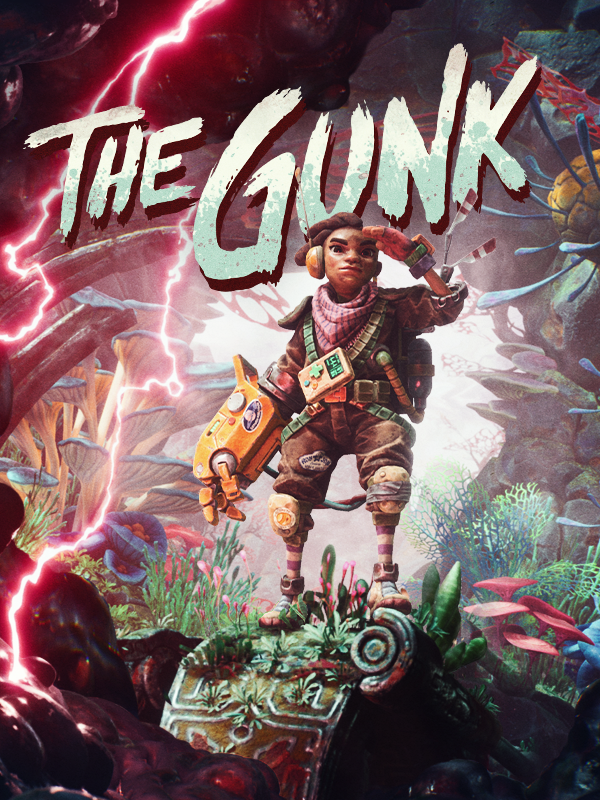

The Gunk
The Gunk
Details
|  | |
| Playtime | Not Played |
| Last Activity | Never |
| Added | 13/08/2025 16:55:24 |
| Modified | 13/08/2025 16:55:59 |
| Completion Status | Not Played |
| Library | Steam |
| Source | Steam |
| Platform | PC (Windows) |
| Release Date | 16/12/2021 |
| Community Score | 63 |
| Critic Score | 66 |
| User Score | |
| Genre | Adventure |
| Developer | Image & Form |
| Publisher | Thunderful |
| Feature | Single Player |
| Links | Uknown Uknown Uknown Uknown Uknown Uknown Uknown Uknown Uknown |
| Tag | |
Description

The Gunk stars Rani, part of our duo of gritty space haulers, struggling to make a buck as they chance upon an untouched planet brimming with life. They came in search of valuable resources, and it looks like they’ve hit the jackpot…
As they uncover the dormant secrets of a shattered civilization, they must battle the curse of a toxic gunk parasite, all while getting caught in a spiral of festering mistrust.
Use your trusty Power Glove to reverse the corruption, uncover secrets of old and heal the planet! Experience the evolving relationship of the crew, as you explore this unique planet.
Use your ingenuity as well as your quick reactions to overcome the challenges that await. What stories lay hidden in this mysterious abandoned world?
What does it all mean? What role can Rani play in the fate of this evocative, moody planet? Sometimes you just have to take a leap of faith.
Uncover the mystery. Cleanse the Gunk. Save the planet.

- Engaging Exploration: Discover a lush jungle planet with damp caves, venture into the unknown and explore a bygone society.
- Corruption & Regrowth: Eradicate the gunk, restore nature, and transform the world around you. Employ the revived plant life to delve deeper into this strange and wondrous ecosystem.
- Intimate Narrative: The narrative is intrinsically linked with the exploration, where our two main characters keep in tight radio contact throughout the game. Fiona Nova lends her voice in a stellar performance as main character Rani.
- Music & Atmosphere: The Gunk invites you to take the time and listen to its soothing tunes. An explorative atmosphere conveyed through an evocative art style. Kick your feet back and enjoy an adventure like no other!